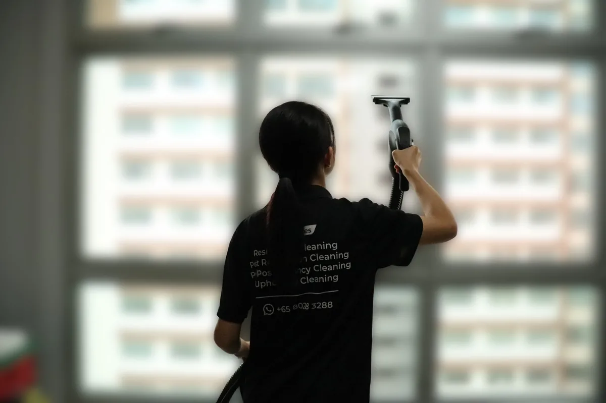
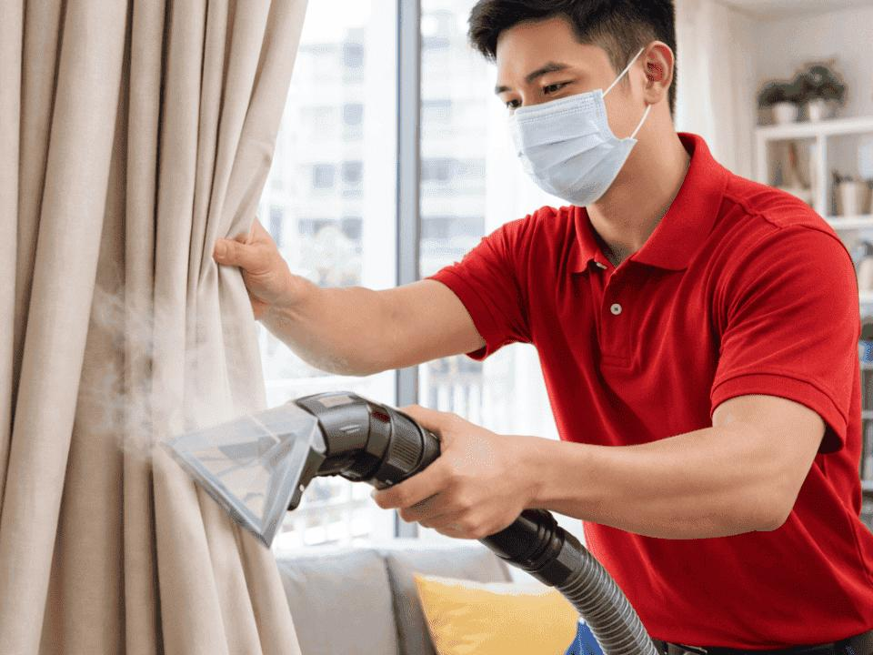
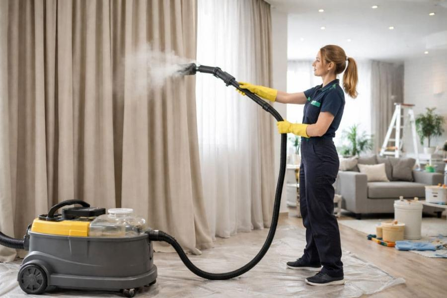

Deep Armrest & Backrest Spill Recovery
Illustrates how targeted tannin pre-conditioning and vertical clear-nozzle extraction lift heavy brown beverage and mud blotches from textured grey upholstery without ring marks.
Explore interactive before-and-after cleaning transformations across residential sofas, armchairs, commercial office seating, and family room sectionals.
Slide the interactive divider on any card below to compare stained, high-traffic upholstery against restored, pH-balanced fabric finishes.
Illustrates how targeted tannin pre-conditioning and vertical clear-nozzle extraction lift heavy brown beverage and mud blotches from textured grey upholstery without ring marks.
Demonstrates how encapsulating foam and precision stainless-wand extraction remove years of body oils, coffee drips, and dullness from commercial blue office seating.
Shows how multi-stage enzymatic pre-sprays combined with balanced hot-water extraction revive light-beige family room chaise lounges after accidental wine and food spills.

Illustrates delicate linen-blend care where controlled moisture extraction lifts dark organic stains while preserving the natural texture and seam alignment of the cushions.
Demonstrates how targeted tannin pre-conditioning unbinds dark beverage and food blotches across beige living room cushions before clear-water rinsing.
Shows precision hand-wand extraction lifting embedded dust and skin oils from deep diamond button tufts while restoring vibrant golden velvet lustre.
What you can expect when our technicians treat the four core categories of home and commercial upholstery.
Lifts grey traffic lanes on armrests and seat fronts, extracts trapped crumbs and pet dander from deep seams, and restores cushion loft and brightness.
 02 • Chairs
02 • Chairs
Removes food oils, beverage rings, and hand marks from seat pads and tufted backs while keeping hardwood legs and swivel bases dry.
 03 • Cushions & Leather
03 • Cushions & Leather
Low-moisture rinsing and hand-applied botanical leather conditioning nourish cushions and armrests without saturating inner cores.

04 • Drapery & WeavesRevives velvet pile direction, refreshes full-height curtains right on the rod, and neutralizes stale room odours across delicate weaves.

05 • Vertical Drapery SteamDirect vertical steam extraction cleans heavy heading pleats and dust-collecting curtain hems without removing drapery from track hooks.

06 • Floor-to-Ceiling ReviveControlled moisture steam refresh lifts trapped airborne pollutants, pet dander, and cooking odours while keeping blackout backings protected.
Schedule a professional upholstery inspection and deep-cleaning appointment tailored to your exact furniture and fabric type.